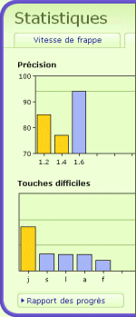

Pour voir tous les résultats, cliquez sur
« Statistiques » dans le menu à droite.
Vous pouvez voir les graphiques d'évolution de la précision et de la vitesse. Pour des informations plus détaillées sur votre progrès cliquez sur « Rapport de progression » et vous verrez ainsi le rapport complet.
Vous pouvez aussi imprimer le rapport de progression.